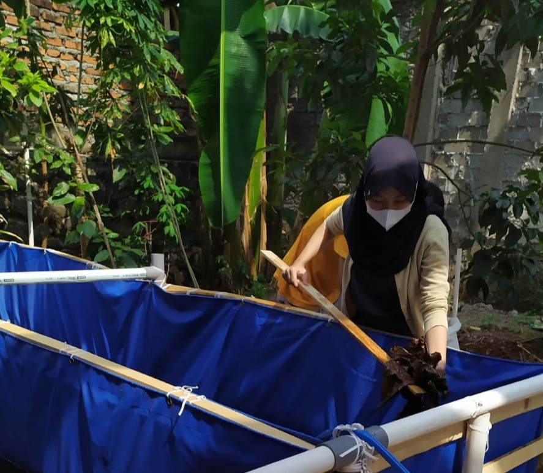
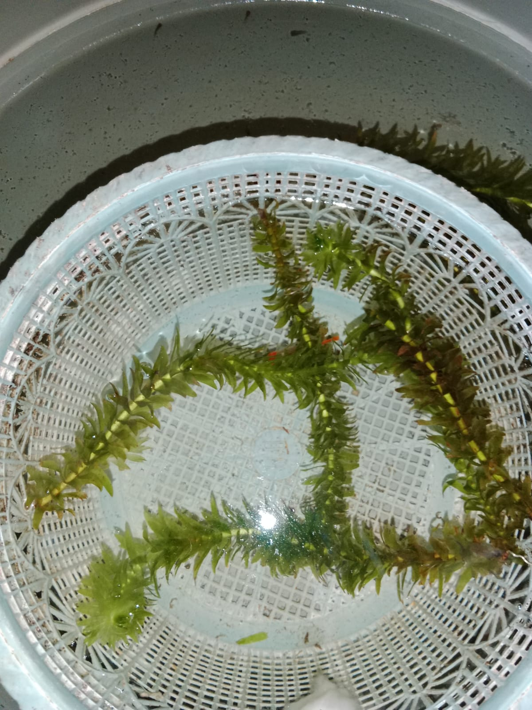
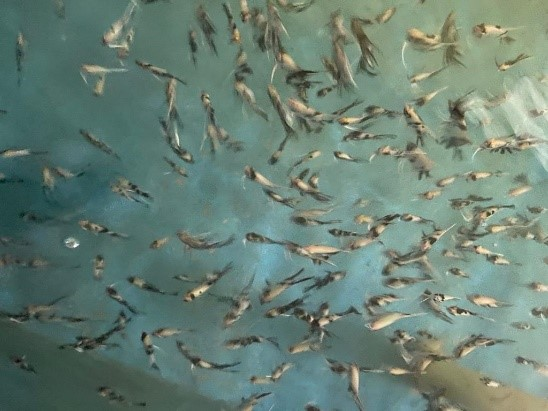
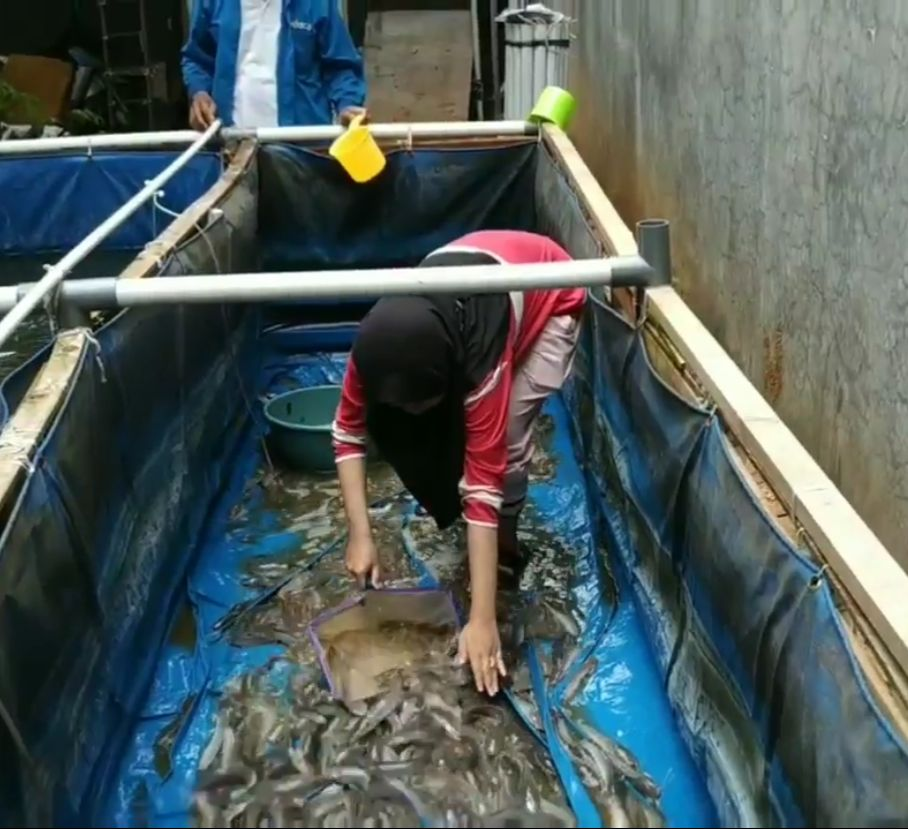

DASAR-DASAR
BUDIDAYA
Pengertian
 Budidaya
Budidaya
 Pemijahan
Pembesaran
Pemijahan
Pembesaran
 Pemanenan
Pemanenan
-
Budidaya
Budidaya ikan merujuk kepada proses menumbuhkan dan memelihara ikan dalam lingkungan yang dikendalikan, biasanya dalam wadah seperti kolam, tambak, atau akuarium. Budidaya ikan bisa dilakukan untuk tujuan komersial, konsumsi pribadi, atau tujuan konservasi.
 -
Cara Budidaya Ikan
1. Penyiapan Kolam Tempat Budidaya
2.Pemilihan Benih Ikan
3. Pakan Untuk Budidaya
4.Pengelolaan Air
5. Pengendalian Hama dan Penyakit
6. Panen Budidaya Ikan

-
Pemijahan
Pemijahan merupakan proses untuk pengeluaran sel telur oleh induk betina dan sperma oleh induk jantan. Proses ini diikuti dengan perkawinan antara induk lele betina dan jantan sehingga menghasilkan induk yang baru .
 -
Pembesaran
Pembesaran ikan adalah suatu kegiatan dan kajian ilmiah merupakan kelanjutan dari kegiatan pembenihan ikan yang menghasilkan benih ikan untuk dibesarkan menjadi ikan ukuran konsumsi dan atau menjadi calon induk.
 -
Pemanenan
Panen merupakan kegiatan yang dilakukan setelah masa pemeliharaan ikan selesai dan ikan mencapai ukuran pasar. Pada saat panen dilakukan penghitungan jumlah hasil panen dan grading ukuran serta pemisahan jenis kelamin ikan.
